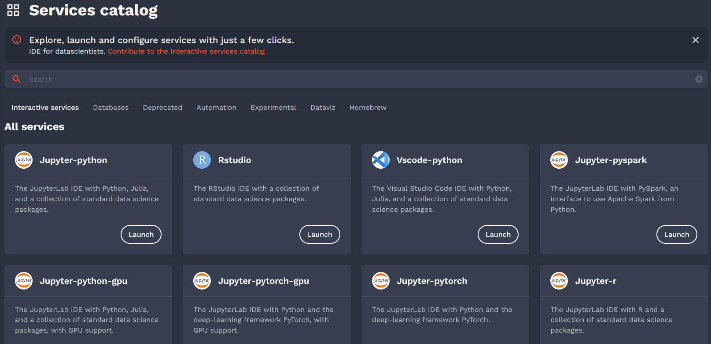
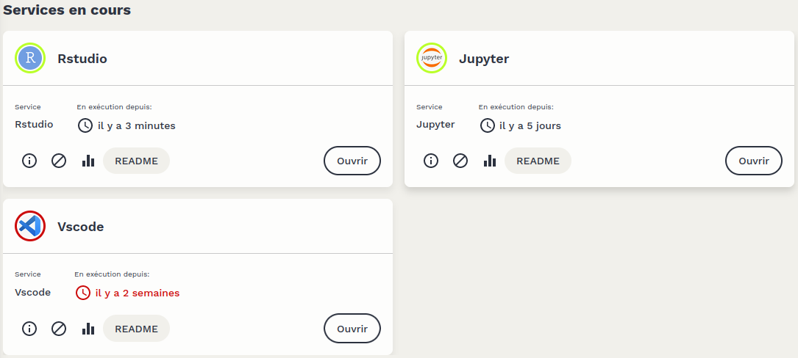

First Use
Welcome to Onyxia Datalab, a shared self-service platform for data processing, designed for statisticians and data scientists working for the government. This tutorial provides a guided tour of the Datalab to quickly get you up and running with its services.
The terms of use for Datalab can be found at this address. We remind you that Datalab is intended exclusively for the processing of public and non-sensitive data. Projects involving non-open data for experimentation can be carried out in consultation with the Datalab team, subject to compliance with project-specific security rules.
Service Catalog
The service catalog is at the core of Datalab’s usage. It offers a set of services for statistical data processing and complete management of data science projects.

Launching a Service
To launch a service, simply click on the Launch button of the desired service.
A page centered on the requested service will then open, offering several options:
- Click again on the
Launchbutton to start the service with its default configuration. - Customize the name that the instance will have once the service is launched.
- Unfold a configuration menu to customize the service’s configuration before launching it.
- Save a customized configuration by clicking on the bookmark at the top right of the service.
The detailed configuration of Datalab services is an advanced usage and is not covered in this tutorial but in other pages of this documentation site.
Using a Service
Launching a service automatically takes you to the My Services page, where all active instances on the user’s account are listed.

Once the service is launched, an Open button appears, allowing access to the service. A password — and, depending on the services, a username — is generally required to use the service. This information is available in the service’s README, which can be accessed by clicking on the button of the same name.
Deleting an Instance
Deleting an instance of a service is done simply by clicking on the trash can icon below the instance.
For some services, deleting an instance will also delete all associated data, and this action is irreversible. Therefore, it is essential to always read the README associated with the instance, which specifies the consequences of deleting the instance. In general, it is crucial to ensure that the data and code used are backed up before deleting the instance. Ideally, version your code with Git and regularly back up the data using MinIO (S3 storage system).
The resources made available for executing services are shared among different Datalab users. Please make sure not to leave active services that you no longer use. We sometimes systematically remove inactive instances after a certain period to free up resources.
Support
Support and assistance for using Datalab are provided on a dedicated channel of the inter-ministerial instant messaging service Tchap. Any questions about using Datalab or suggestions for improvement are welcome there.
For users not using Tchap, it is also possible to contact us via email at innovation@insee.fr.